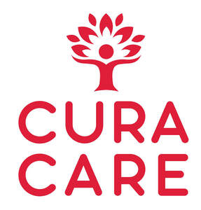

Trade Mark Journal No.2025/030 25 July 2025
UK00004198263 2 May 2025 (35,41,43,44)
Mark 1

Mark 2
Mark 3
Mark 4
- Class 35
- Administration of the business affairs of franchises; business advice and consultancy relating to franchising and the operation of franchises; assistance in franchises commercial business management; advice in the running of establishments as franchises; business management assistance relating to franchising; provision of assistance in the establishment of franchises; business assistance relating to starting and running a franchise; conducting business feasibility studies relating to franchises; consultancy relating to the establishment and running of businesses; franchise recruitment; management advisory services related to franchising; provision of business information relating to franchising; marketing assistance in the field of franchising; market research and market analysis for developing new sales strategies for franchising; advisory, information and consultancy services for all of the aforementioned services.
- Class 41
- Providing of training in the field of health care and nutrition; healthcare education and training services; providing medical education and training; education and training on the subject of providing home care services, domiciliary services, nursing care, welfare care services, respite care services, therapy services, psychotherapy services; entertainment and recreational services for the elderly, people with physical or mental disabilities, people with learning difficulties and people with mental health issues; arranging for the provision of recreational facilities; organisation of group recreational activities and events; advisory, information and consultancy services for all of the aforementioned services.
- Class 43
- Respite care services in the nature of adult day care; temporary accommodation; provision of temporary accommodation for the elderly, people with physical or mental disabilities, people with learning difficulties and people with mental health difficulties; arranging for the provision of food and drink; advisory, information and consultancy services for all of the aforementioned services.
- Class 44
- Home health care services; Home-visit nursing care; Information services relating to health care; Managed health care services; Nursing care; Nursing care (Provision of -); Nursing care services; Palliative care; Preparation of reports relating to health care matters; Providing information relating to nursing care services; Provision of health care services; Provision of health care services in domestic homes; Respite care (provision of); Respite care services in the nature of nursing aid services; provision of mental health care; hygienic and beauty care for human beings; provision of care to the elderly, people with physical or mental disabilities, people with learning difficulties and people with mental health issues, convalescent home services; monitoring of patients; medical health and fitness assessment services; health and medical information services; the provision of healthcare counselling; advisory, information and consultancy services for all of the aforementioned services.
Cura Care Limited
Representative: Stevens Hewlett & Perkins